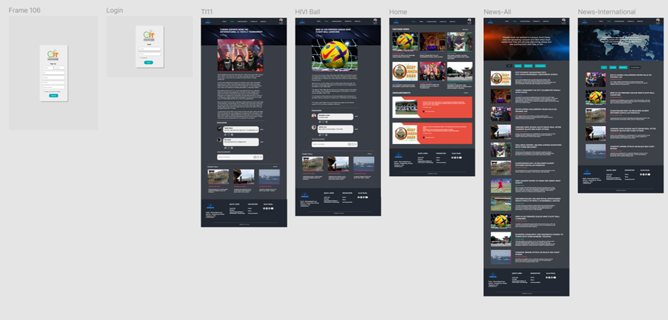

Portfolio Details
This project reflects my ability to solve real-world problems through thoughtful UX/UI design and user-centric functionality.

Project information
- Category: Website
- Client: Gyalpozhing college of Information Technology
- Project date: 04 July, 2023
- Project URL: www.InformationForum.com
Information Forum Website
The Information Forum is a dedicated web-based platform developed to streamline communication and information sharing within the Gyalpozhing College of Information Technology (GCIT) community. Designed with accessibility and convenience in mind, the platform ensures that both students and lecturers stay informed about campus news, academic announcements, event updates, and other important notifications. It addresses a key communication gap by catering especially to those who are off-campus during the morning assembly or unable to attend in person, providing a centralized space to revisit and catch up on missed announcements at any time.
With an intuitive and user-friendly interface, the Information Forum allows for easy posting, browsing, and searching of updates by category or date. It fosters a more connected and informed campus environment, reducing the chances of missed communication and enhancing academic coordination. Whether it’s a change in class schedule, reminders about submission deadlines, or details about college events, the platform empowers users to stay engaged with GCIT’s daily happenings—anytime, anywhere.
Purpose:
The Information Forum is a web-based communication platform tailored for the Gyalpozhing College of Information Technology (GCIT) community. It ensures that students and faculty can access announcements, academic updates, and event news at their convenience, bridging the communication gap—especially for those who miss morning assemblies or are off-campus.
Problem Statement:
Traditional communication methods at GCIT, such as verbal announcements or posters, often fail to reach all students—especially those absent or in remote locations. There’s no centralized digital space to access or revisit these messages, causing confusion and miscommunication.
Target Audience:
- Students:Who miss announcements or want to revisit news later.
- Lecturers:Who need a quick way to share academic updates or schedule changes.
- GCIT Administration:Who must communicate campus-wide messages efficiently.
Goals:
- Ensure timely and accessible communication for the entire GCIT community.
- Reduce missed announcements and improve academic coordination.
- Provide a centralized platform for categorized and searchable posts.
Empathize
User Research:
Q:How do you currently stay updated with campus news?
A:“Mostly by asking friends or checking the WhatsApp group—but I often miss things.”
Q:What’s your biggest challenge with the current announcement system?
A:“There’s no place to find past announcements once they’re said in assembly.”
Survey Summary (100 GCIT Students):
- 72% reported missing at least one important announcement due to absence.
- 63% said WhatsApp or verbal notices are insufficient for tracking updates.
- 80% were interested in a searchable digital platform.
User Insights:
- Students miss real-time announcements
Possible Solution:Central feed with timestamped updates. - No official archive of announcements
Possible Solution:Persistent storage and categorized browsing. - Confusion with multiple channels
Possible Solution:Consolidate communication in one platform. - Users need a simple interface
Possible Solution:Minimal design with clear navigation.
Empathy Map:
| Who are the users? | Understand their background and situation. |
| What do they say? | Capture their thoughts on the product or similar ones. |
| What do they think? | Identify their opinions and concerns. |
| What do they do? | Track their actions before, during, and after using the product. |
| What do they feel? | Note their emotions throughout the experience. |
User Persona:
A user persona is a detailed profile that represents you based on your skills, interests, and ongoing projects. It helps define your strengths, expertise, and goals, making it easier to align your work with your interests.
User Story:
A User Story is a short, simple description of a feature told from the perspective of the person who desires the new capability, usually a user or customer of a system. It’s commonly used in Agile software development to capture a specific need in a concise way.
User Journey Map:
A User Journey Map is a visual or narrative representation of the user’s experience as they interact with a product or service. It highlights the steps a user takes to achieve a goal, including their emotions, needs, and pain points at each stage. It helps designers and developers create more user-centric solutions.
Define
Define Problem statement:
GCIT students and lecturers face fragmented and inconsistent communication. There’s a lack of centralized digital access to campus announcements, leading to missed deadlines, confusion, and repeated queries.
- Solution:A web-based Information Forum offering categorized, timestamped, and searchable updates for students and staff.
Define Hypothesis statement:
We believe that providing a centralized web platform for announcements will improve campus-wide communication and reduce the number of missed or repeated notifications.
Ideate
Goal Statement:
Design and develop a platform where users can easily post, access, and browse campus announcements—categorized by type and searchable by keyword or date.
User flow:
A User Flow (also called a user flow diagram) is a visual representation of the path a user takes to accomplish a specific task within a product or website. It maps out each step or screen the user interacts with and shows the decision points along the journey.
- Home:Users land on the homepage where they can view the latest announcements, filter by category, or use the search bar. No login is required for basic browsing.
- Login/Register:Staff log in securely to post announcements. Students may log in to access personalized features like bookmarking or notification preferences.
- Post Announcement:Logged-in staff can post updates using a form that includes a title, category, description, and optional attachments. The post appears instantly on the homepage.
- Browse by Category:Users can filter announcements by predefined categories such as Academic, Events, or Administrative to find relevant updates easily.
- Search Bar:Users enter keywords or dates to find specific announcements quickly. Results can be sorted by date or category.
- Notification Settings:Users can subscribe to specific categories and choose to receive email alerts or on-site notifications when new posts match their interests.
Storyboard:
A Storyboard is a visual or narrative representation of a user’s interaction with a product or service, shown through a sequence of illustrated or described scenes. It’s widely used in UX design, product development, and filmmaking to visualize the user experience, empathize with users, and communicate ideas clearly.
Competitive Audit
A Competitive Audit is a strategic process where a business analyzes the strengths and weaknesses of its competitors to better understand the market landscape and improve its own positioning. It’s often used in marketing, product development, and business strategy.
Audit Goal:
The goal of this competitive audit is to evaluate existing communication platforms used within the GCIT community and similar educational environments. This assessment helps identify the strengths, weaknesses, and gaps in current solutions—such as WhatsApp groups, Facebook pages, and academic portals—to inform the development of the Information Forum. By understanding what these platforms offer and where they fall short, we aim to create a more centralized, reliable, and user-friendly tool for campus-wide communication and information sharing.
Paper Wireframe
A Paper Wireframe is a hand-drawn sketch of a user interface that outlines the basic layout, structure, and functionality of a digital product like a website or mobile app. It's an essential early step in the design process to quickly explore ideas and get feedback without worrying about visual details.
UX Research Study — Plan

Low-fidelity designs
Low-fidelity designs are basic visual representations of a product or system used in the early stages of design and development. They focus on layout, structure, and functionality rather than aesthetics, colors, or final content.
High-fidelity designs
High-fidelity (hi-fi) designs are detailed and polished visual representations of a product that closely resemble the final version. They are typically created after low-fidelity designs have been approved and refined.
